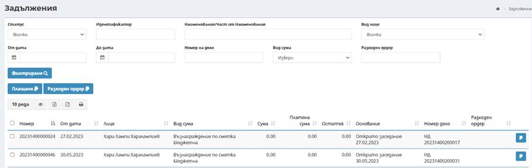
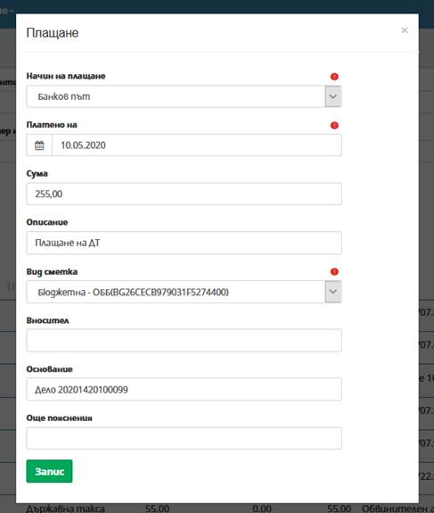
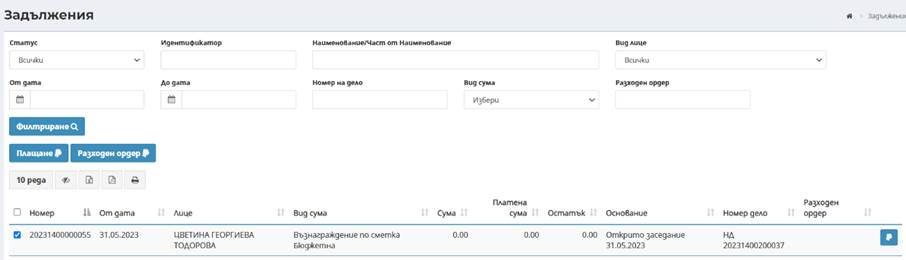
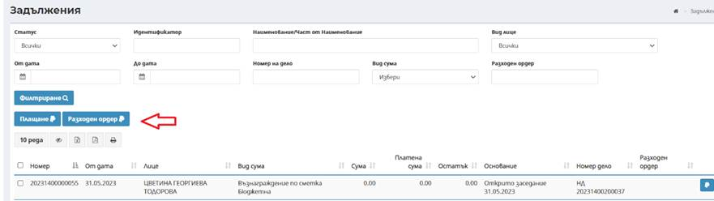
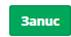
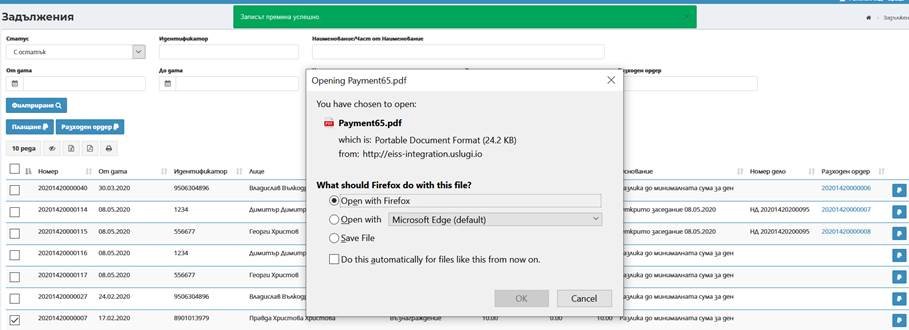
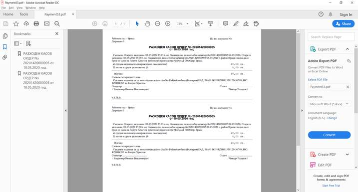

Екран Задължения предоставя информация за въведени начислени суми за възнаграждения, разходи за изплащане и др. на други участници – вещи лица, съдебни заседатели и други .
При първоначално зареждане на екран Задължения не се визуализират резултати. При директно натискане на бутон Филтриране , се извеждат данни за всички задължения, със съответната информация за тях. Наборът от данни може да бъде филтриран, в зависимост от въведените критерии в горната част на екрана и по следните полетата:

- Статус – избор на всички суми, с остатък или платени;
- Идентификатор – избор на идентификатор на лице чрез въвеждане на минимум три последователни символа, системата автоматично търси и предлага за избор списък от лица;
- Наименование/част от наименование – избор по наименование/име на лице чрез въвеждане на минимум три последователни символа, системата автоматично търси и предлага за избор списък от лица;
- От дата – избира се начална дата на период за филтриране на резултатите;
- До дата – избира се крайна дата на период за филтриране на резултатите;
- Номер на дело – избира се номер на дело, по което е въведена сума чрез въвеждане на минимум три последователни символа, системата автоматично търси от списък с дела;
- Разходен ордер – чрез въвеждане на минимум три последователни символа, системата автоматично търси от списък с РКО;
- Вид сума – избира се от падащ списък от номенклатура вида на сумата.
След избор на бутон Филтриране има възможност за преглед на изведените в екрана резултати.
Бутон Плащане дава възможност да се обработят задълженията, чрез отразяване на плащане по тях. След прилагане на съответните филтри по въведени критерии и чрез маркиране на чекбокс пред номера на всяка сума има възможност за множествено отразяване на плащания.
Плащане на начислени суми – плащане на задължения от страни:
След маркиране на чекбоксовете през съответните суми и избор на бутон Плащане се отваря модален прозорец за въвеждане на необходимите данни:

Въвеждат се следните необходими данни за отразяване на плащане:
- Начин на плащане – избира се начин на плащане от страната – през ПОС терминал или по банков път;
- Платено на – избира се дата на плащане. По подразбиране е заредена текуща дата;
- Сума – извежда се начислената сума (или сбор от начислени суми) в зависимост от избора на суми;
- Описание – въвежда се допълнителна информация при необходимост. Полето не е със задължителен характер;
- Вид сметка – автоматично се зарежда от системата в случай на плащане на суми от банкови сметки на съда в зависимост от избрания вид сума (бюджетна или депозитна сметка);
- Вносител – въвежда се името на вносителя на сумата по задължението;
- Основание – (приложимо за плащане по банков път) въвежда се основание за изплащане на начислени суми;
- Още пояснения – (приложимо за плащане по банков път) въвежда се допълнителна информация при необходимост.
След въвеждане на всички изискуеми данни и избор на бутон Запис успешно се отразява ново плащане в системата.

Бутон Разходен ордер дава възможност да се маркират една или повече от една суми за заплащане за възнаграждение и/или транспортни разходи на вещо лице, заседател или друго лице по делото. След прилагане на съответните филтри по въведени критерии и чрез маркиране на чекбокс пред номера на всяка сума има възможност за множествено отразяване на суми за изплащане.
Плащане на начислени суми – изплащане на възнаграждения и разходи на лица (вещи лица, заседатели и др.):

След маркиране на чекбоксовете през съответните суми и избор на бутон Разходен ордер се отваря модален прозорец за въвеждане на необходимите данни:
Въвеждат се следните необходими данни за отразяване на плащане:
- Съдия - Въвежда се ЕГН или част от името на лицето (минимум 3 последователни символа) на съдията;
- Банкова сметка – въвежда се IBAN на банкова сметка;
- BIC – попълва се автоматично от системата в зависимост от въведения IBAN;
- Име на банка – попълва се автоматично от системата в зависимост от въведения IBAN;
- Регион – въвежда се района на съдебния заседател (само за заседателите). Полето не е със задължителен характер;
- Служител при – въвежда се работодател на лицето;
- Начин на плащане – избира се начин на плащане от страната – през ПОС терминал или по банков път;
- Населено място – въвежда се населено място по месторабота;
- По вх. документ № - въвежда се номер на документ.
След въвеждане на всички изискуеми данни и
избор на бутон Запис


РКО може да бъде записан локално или да бъде отворен за преглед. След отваряне се визуализира генерирания РКО в съответния брой екземпляри.
